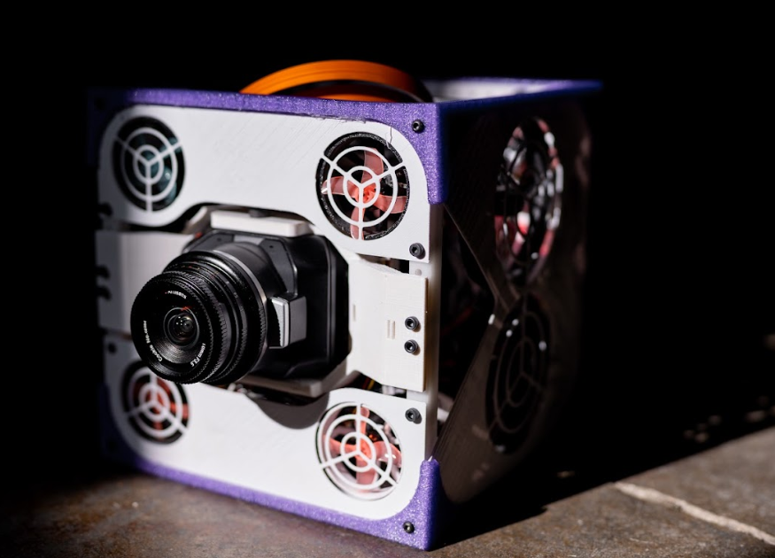

Story 1 · State estimation
Yaw aligned. Roll still disagreed.
Hanging tests exposed a camera/IMU frame mismatch. A two-state Kalman test for yaw and body-rate bias isolated the transient before testing returned to all three axes.
Home / Selected work / Part 01
Mechanical controls · Jun 2025 to Jan 2026
From a control command to a physical response.

Every request passes two checks: do the sensor frames agree, and can fourteen thrusters produce the force and torque?

Story 1 · State estimation
Hanging tests exposed a camera/IMU frame mismatch. A two-state Kalman test for yaw and body-rate bias isolated the transient before testing returned to all three axes.
Story 2 · Actuation
Some requests fell outside the thrusters' feasible wrench envelope. Flooring negative fallback commands could leave zero output, so requests were scaled toward feasible commands.
Video, mutedHover to play
Video, mutedHover to play
General notes
My work covered fan-platform GNC architecture, reaction-wheel PID control, ROS2 simulation, motor PCB commissioning, EKF, avionics and VIO integration. Ed advised on some EKF tuning weights.